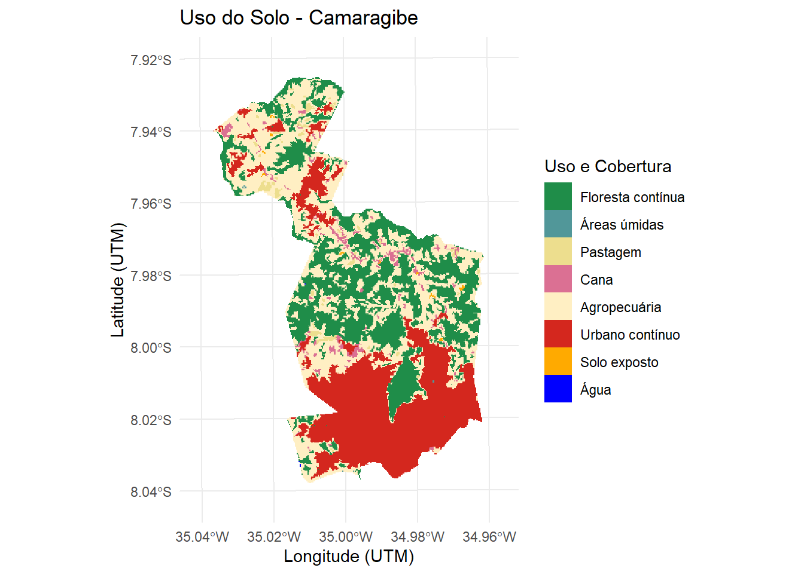
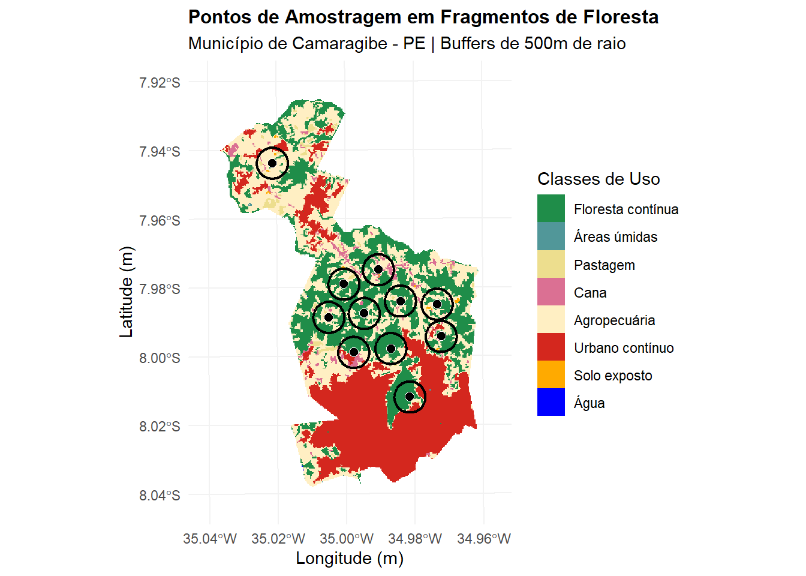
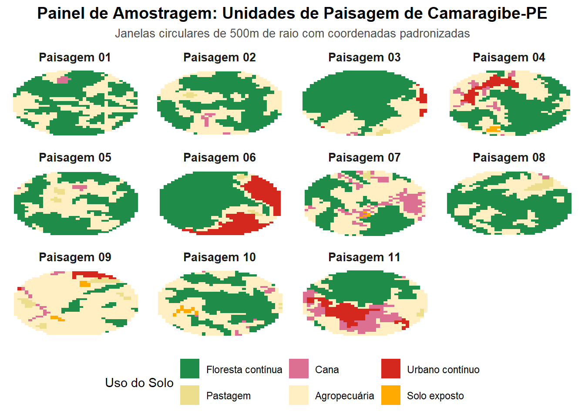

library("terra")terra 1.9.11library("sf")Linking to GEOS 3.14.1, GDAL 3.12.1, PROJ 9.7.1; sf_use_s2() is TRUElibrary("landscapemetrics")
library("tmap")
library("ggplot2")
library("vegan")Carregando pacotes exigidos: permutelibrary("tidyverse")── Attaching core tidyverse packages ──────────────────────── tidyverse 2.0.0 ──
✔ dplyr 1.2.0 ✔ readr 2.2.0
✔ forcats 1.0.1 ✔ stringr 1.6.0
✔ lubridate 1.9.5 ✔ tibble 3.3.1
✔ purrr 1.2.1 ✔ tidyr 1.3.2── Conflicts ────────────────────────────────────────── tidyverse_conflicts() ──
✖ tidyr::extract() masks terra::extract()
✖ dplyr::filter() masks stats::filter()
✖ dplyr::lag() masks stats::lag()
ℹ Use the conflicted package (<http://conflicted.r-lib.org/>) to force all conflicts to become errorslibrary("rgbif")
library("geodata")
library("geobr")
library("tidyterra")
Anexando pacote: 'tidyterra'
O seguinte objeto é mascarado por 'package:stats':
filtercat("✓ Todos os pacotes carregados com sucesso!\n")✓ Todos os pacotes carregados com sucesso!# Carregando Raster (o Quarto vai buscar direto na mesma pasta onde ele está)
Camaragibe <- rast("rast_camaragibe.tif")
# Reprojetando o raster para metros (UTM 25S)
camaragibe_utm <- project(Camaragibe, "EPSG:31985", method = "near")
# Verificando se a resolução está correta e se o CRS mudou
print(camaragibe_utm)class : SpatRaster
size : 455, 317, 1 (nrow, ncol, nlyr)
resolution : 29.78043, 29.78043 (x, y)
extent : 274960.6, 284401, 9110439, 9123989 (xmin, xmax, ymin, ymax)
coord. ref. : SIRGAS 2000 / UTM zone 25S (EPSG:31985)
source(s) : memory
name : rast_camaragibe
min value : 3
max value : 33 # Verificando os ID's do raster
unique(Camaragibe) rast_camaragibe
1 3
2 11
3 15
4 20
5 21
6 24
7 25
8 33# Classificando o Raster como categórico
Camaragibe_fator <- as.factor(camaragibe_utm)
# Definindo seu dicionário de cores (perfeito)
df_legenda <- data.frame(
ID = c(3, 11, 15, 20, 21, 24, 25, 33),
Classe = c("Floresta contínua", "Áreas úmidas", "Pastagem", "Cana",
"Agropecuária", "Urbano contínuo", "Solo exposto", "Água"),
Cor = c("#1f8d49", "#519799", "#edde8e", "#db7093",
"#ffefc3", "#d4271e", "#ffaa00", "#0000FF")
)
# Criando vetores nomeados baseados DIRETAMENTE no ID numérico do MapBiomas
cores_projeto <- setNames(df_legenda$Cor, df_legenda$ID)
classes_projeto <- setNames(df_legenda$Classe, df_legenda$ID)
cat("✓ Cores e legendas prontas para o ggplot!\n")✓ Cores e legendas prontas para o ggplot!# Plotando com a amarração correta de IDs
ggplot() +
geom_spatraster(data = Camaragibe_fator) +
scale_fill_manual(
values = cores_projeto, # O ggplot olha o ID do pixel e busca no vetor
labels = classes_projeto, # O ggplot substitui o número pelo nome correto
na.value = "transparent",
name = "Uso e Cobertura",
breaks = df_legenda$ID # Força o ggplot a olhar estritamente para esses IDs
) +
theme_minimal() +
labs(
title = "Uso do Solo - Camaragibe",
x = "Longitude (UTM)",
y = "Latitude (UTM)"
)
# Criando o limite de borda do municipio
municipio_sf <- as.polygons(camaragibe_utm) %>%
st_as_sf() %>%
st_union()
# Criar a "Área Segura" (Buffer negativo de 1000 metros)
margem_segura <- st_buffer(municipio_sf, dist = -1000)
cat("✓ Limites municipais e zona de segurança gerados com sucesso!\n")✓ Limites municipais e zona de segurança gerados com sucesso!# ==============================================================================
# EXTRAÇÃO DA FLORESTA SEM DEPENDER DE NOMES DE COLUNAS VAGOS
# ==============================================================================
# Mascaramos o raster: mantemos apenas os pixels da classe 3, o resto vira NA
floresta_raster <- camaragibe_utm == 3
floresta_raster[floresta_raster == 0] <- NA
# Agora transformamos em vetor. O R gera polígonos APENAS para os dados válidos (floresta)
floresta_total_sf <- as.polygons(floresta_raster, dissolve = TRUE) %>%
st_as_sf()
# Cruzando com a margem segura
floresta_sorteio <- st_intersection(floresta_total_sf, margem_segura)Warning: attribute variables are assumed to be spatially constant throughout
all geometriesif (nrow(floresta_sorteio) == 0) {
stop("Erro: Não há manchas de floresta a mais de 1km da borda do município.")
}
cat("✓ Fragmentos de floresta para sorteio filtrados com sucesso! Total de manchas:", nrow(floresta_sorteio), "\n")✓ Fragmentos de floresta para sorteio filtrados com sucesso! Total de manchas: 1 # Set.seed para permitir reprodutibilidade
set.seed(1)
# Gerando candidatos a pontos amostrais
candidatos <- st_sample(floresta_sorteio, size = 500) %>%
st_as_sf()
# Inicializando o objeto de pontos finais com o primeiro candidato
pontos_finais <- candidatos[1, ]
# ==============================================================================
# SELEÇÃO ESPACIAL: FILTRO DE DISTÂNCIA MÍNIMA DE 1KM (REINTEGRADO)
# ==============================================================================
for(i in 2:nrow(candidatos)) {
dist <- st_distance(candidatos[i, ], pontos_finais)
if(all(as.numeric(dist) > 1000)) {
pontos_finais <- rbind(pontos_finais, candidatos[i, ])
}
if(nrow(pontos_finais) == 15) {
break
}
}
# Verificando a quantidade final de pontos obtidos
if(nrow(pontos_finais) < 15) {
warning("Aviso: O script conseguiu encontrar apenas ", nrow(pontos_finais), " pontos respeitando a distância de 1km.")
} else {
cat("✓ Sucesso! Os 15 pontos amostrais foram sorteados e espaçados corretamente!\n")
}Warning: Aviso: O script conseguiu encontrar apenas 11 pontos respeitando a
distância de 1km.# Criando as janelas amostrais circulares de 500 metros ao redor dos pontos obtidos
buffers_500m <- st_buffer(pontos_finais, dist = 500)
# ==============================================================================
# PLOT DO MAPA GERAL DA AMOSTRAGEM
# ==============================================================================
ggplot() +
geom_spatraster(data = Camaragibe_fator) +
scale_fill_manual(
values = cores_projeto,
labels = classes_projeto,
na.value = "transparent",
name = "Classes de Uso",
breaks = df_legenda$ID
) +
geom_sf(data = buffers_500m, fill = NA, color = "black", linewidth = 0.8) +
geom_sf(data = pontos_finais, color = "white", fill = "black", shape = 21, size = 2.5) +
theme_minimal() +
labs(
title = "Pontos de Amostragem em Fragmentos de Floresta",
subtitle = "Município de Camaragibe - PE | Buffers de 500m de raio",
x = "Longitude (m)",
y = "Latitude (m)"
) +
theme(
plot.title = element_text(face = "bold", size = 12),
panel.grid.major = element_line(color = "gray95")
)
# ==============================================================================
# CÁLCULO DE MÉTRICAS DA PAISAGEM (LANDSCAPEMETRICS)
# ==============================================================================
id_floresta <- df_legenda$ID[df_legenda$Classe == "Floresta contínua"]
# produzindo lista
metricas_lista <- list()
# processamento
for(i in 1:nrow(buffers_500m)) {
crop_i <- crop(camaragibe_utm, buffers_500m[i, ])
mask_i <- mask(crop_i, buffers_500m[i, ])
# A. Calcular o Índice de Diversidade de Shannon (nível da paisagem)
shannon <- lsm_l_shdi(mask_i)
# B. Calcular métricas de classe para todas as classes presentes no buffer
pland_all <- lsm_c_pland(mask_i) # % de cobertura de cada classe
ed_all <- lsm_c_ed(mask_i) # Densidade de borda (m/ha) de cada classe
# C. Filtrar os resultados especificamente para a classe de Floresta (ID 3)
pland_floresta <- pland_all %>% filter(class == id_floresta)
ed_floresta <- ed_all %>% filter(class == id_floresta)
# D. Extrair os valores numéricos brutos
div_shannon <- shannon$value
perc_floresta <- ifelse(nrow(pland_floresta) > 0, pland_floresta$value, 0)
dens_borda <- ifelse(nrow(ed_floresta) > 0, ed_floresta$value, 0)
# E. Armazenar os resultados estruturados em uma linha do data frame
metricas_lista[[i]] <- data.frame(
id_buffer = i,
diversidade_shannon = div_shannon,
perc_floresta = perc_floresta,
densidade_borda_m_ha = dens_borda
)
}
cat("✓ Métricas de paisagem calculadas para todos os buffers!\n")✓ Métricas de paisagem calculadas para todos os buffers!metricas_paisagem <- bind_rows(metricas_lista)
cat("\n=== MÉTRICAS DA PAISAGEM POR BUFFER (CAMARAGIBE) ===\n")
=== MÉTRICAS DA PAISAGEM POR BUFFER (CAMARAGIBE) ===print(metricas_paisagem, row.names = FALSE) id_buffer diversidade_shannon perc_floresta densidade_borda_m_ha
1 0.7377999 57.822410 125.65539
2 0.7850574 57.294995 92.26205
3 0.7751781 68.565401 43.21360
4 1.0912712 48.294243 85.91666
5 0.8018921 56.762513 95.12289
6 0.9828172 59.546926 35.86117
7 1.0754905 38.617021 76.80325
8 0.7874332 63.761955 100.27339
9 0.8227053 8.626198 38.26372
10 0.8575583 47.468354 96.69929
11 1.3212713 38.105263 42.76916# ==============================================================================
# MONTAGEM DO PAINEL DE PAISAGENS COMPACTADO
# ==============================================================================
lista_recortes <- list()
for(i in 1:nrow(buffers_500m)) {
crop_i <- crop(Camaragibe_fator, buffers_500m[i, ])
mask_i <- mask(crop_i, buffers_500m[i, ])
df_i <- as.data.frame(mask_i, xy = TRUE)
colnames(df_i)[3] <- "Categoria"
centro_x <- mean(df_i$x)
centro_y <- mean(df_i$y)
df_i$x_relativo <- df_i$x - centro_x
df_i$y_relativo <- df_i$y - centro_y
df_i$id_buffer <- paste("Paisagem", sprintf("%02d", i))
lista_recortes[[i]] <- df_i
}
df_painel <- bind_rows(lista_recortes)
df_painel$Categoria <- as.factor(df_painel$Categoria)
# Plotando o Painel
ggplot(df_painel) +
geom_tile(aes(x = x_relativo, y = y_relativo, fill = Categoria)) +
scale_fill_manual(
values = cores_projeto,
labels = classes_projeto,
na.value = "transparent",
name = "Uso do Solo",
breaks = df_legenda$ID
) +
# Organização fluida em 4 colunas adaptada para a contagem real de pontos (11)
facet_wrap(~id_buffer, ncol = 4) +
theme_minimal() +
labs(
title = "Painel de Amostragem: Unidades de Paisagem de Camaragibe-PE",
subtitle = "Janelas circulares de 500m de raio com coordenadas padronizadas",
fill = "Uso do Solo"
) +
theme(
axis.text = element_blank(),
axis.title = element_blank(),
axis.ticks = element_blank(),
panel.grid = element_blank(),
strip.text = element_text(face = "bold", size = 10),
legend.position = "bottom",
plot.title = element_text(face = "bold", size = 14, hjust = 0.5),
plot.subtitle = element_text(size = 10, color = "gray30", hjust = 0.5)
)